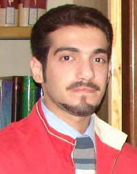

|
|
کاوه قاسمی کرمانشاهی آزاد شد
يكشنبه2 خرداد 1389
کاوه قاسمی کرمانشاهی فعال حقوق بشر، عضو کمپین یک میلیون امضا، سازمان حقوق بشر کردستان و عضو ادوار تحکیم وحدت، که از ۱۴ بهمن در بازداشت به سر میبرد، ساعتی پیش از زندان کرمانشاه آزاد شد.
به گزارش خبرنگار رهانا، طی روزهای گذشته، بنابه درخواست مسئولان قضایی خانوادهی وی اقدام به تودیع وثیقهی ۱۰۰ میلیون تومانی کرده بودند که پس از آن، وی را به بند عمومی زندان کرمانشاه منتقل کرده بودند.
کاوه قاسمی کرمانشاهی بیش از ۱۰۰ روز در بازداشت به سر برد و خانواده وی بارها نسبت به وضعیت نامناسب روحی و جسمانی وی ابراز نگرانی کرده بودند.